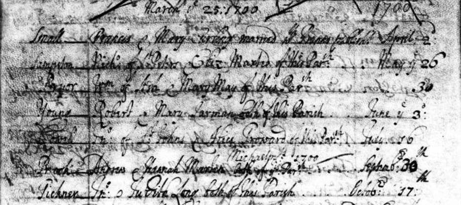

Alice Cowell (née Troward) c1680 - 1743
[ Home ] | [ Calendar ] | [ Surnames Index ] | [ Family History ]The child of Edward Troward and Sarah Harnet, Alice Troward, the 6 times great-grandmother of <a href="I1.html">Nigel Horne</a>, was born in St Lawrence, Thanet, Kent, England <i>c.</i> 1680, was baptized there on Jun 10, 1680 and also married John Cowell (a yeoman with whom she had 11 children: <a href="I225.html">John</a>, <a href="I545.html">Sarah</a>, <a href="I544.html">Edward</a>, <a href="I543.html">Benjamin</a>, <a href="I542.html">Jane</a>, <a href="I539.html">William</a>, <a href="I537.html">Troward</a>, <a href="I541.html">Martha</a>, <a href="I538.html">Beaton</a>, <a href="I540.html">Joseph</a> and <a href="I534.html">Mary</a>) there, on Jul 16, 1700<span class="citation">2</span>. In 1700, she lived at her birthplace<span class="citation">4</span> (the same place as her father had been living on Mar 16, 1679). <p>She died on Jan 28, 1743 in Margate, Kent, England<span class="citation">1</span> and was buried there at St John the Baptist Church <i>c.</i> 1743 (KFHS CD28)<span class="citation">1,3</span>.
Parents
- Edward was born on Jan 12, 1656
- Sarah was born c. 1653
Children
- John was born c. 1701
- Sarah was born in 1705
- Edward was born c. 1707
- Benjamin was born in 1709
- Jane was born c. 1711
- William was born c. 1713
- Troward was born in 1714
- Martha was born c. 1715
- Beaton was born in 1717
- Joseph was born c. 1721
Citations
- England, Select Deaths and Burials, 1538-1991 Ancestry.com Operations, Inc.
- England, Select Marriages, 1538–1973 Ancestry.com Operations, Inc.
- Kent, Canterbury Archdeaconry burials 1538-1988 - Findmypast
- England, Select Marriages, 1538–1973 Ancestry.com Operations, Inc.
Media
John Cowell - Alice Troward - headstone

John Cowell - Alice Troward - marriage record

Alice Troward - Baptism

Alice Cowell - Burial

Kent, East Kent marriage index 1538-1754 Transcription - GBPRS-EASTKENT-MAR-165046-1
England Marriages 1538-1973 - R_847896540/2
Boyd's 1st Misc - GBPRS/M/710665840/1
Kent, Canterbury Archdeaconry burials 1538-1988 - GBPRS/CANT/D/95556202
Kent, East Kent marriage index 1538-1754 - GBPRS/EASTKENT/MAR/165046/2
England Births & Baptisms 1538-1975 - R_885328053
England Births & Baptisms 1538-1975 - R_883190149
Britain, marriage licences - GBPRS/COA/MARRLICENCE/00134440/2
Family Tree
Generated by Ged2Site. Last updated on Jul 20, 2025